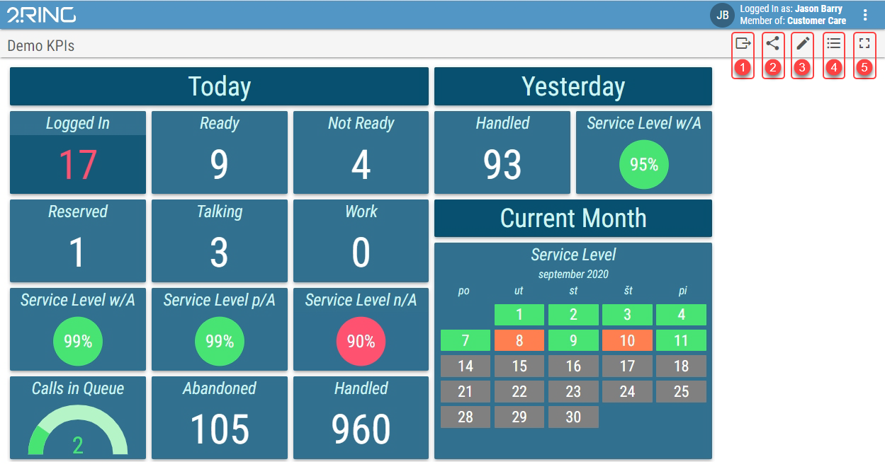
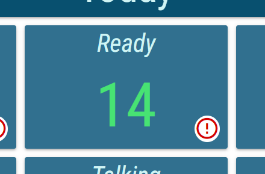
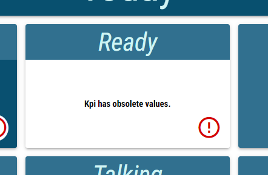

Displaying a Layout/Widget¶
- The Layout view can be accessed in one of two ways:
From Layout list by clicking any listed Layout.
Directly using the Layout’s URL or short URL.
Figure 1: Layout
- Export button
Exports and downloads the currently opened layout/widget as a json file. For more info see Exporting/Importing Layouts chapter.
- Share button
Opens a dialog in which full and short Layout URLs are displayed and can be copied. For more information about short URL see Using Short URLs chapter.
- Edit button
Opens a Layout editor for selected Layout. Available only for users with permissions to access the Edit mode. For more information about the Layout editor, see Editing a Layout chapter.
- Layout list button
Navigation to the Layout list. For more information about Layout list see Working with the Layout List chapter.
- Full Screen button
Toggle of the full screen mode. In full screen mode Layout’s toolbar and 2Ring toolbar will be hidden. Full screen mode can be also activated by double-clicking anywhere on the Layout. For more information see Full Screen Mode chapter.
Misconfigured segments, unavailable application server or calculation errors are indicated by exclamation mark icon in bottom right part of the affected segment. Upon clicking this icon error message is shown in segment instead of selected segment type.
Figure 2: Exclamation mark
Figure 3: Exclamation mark - reason
